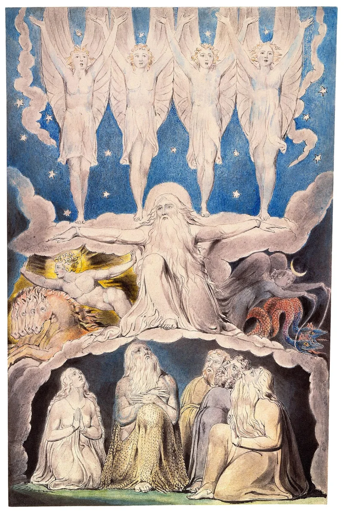

Jesus and Lucifer as spirit brothers
UnrefutedNo good counter-argument has been published by LDS scholars.
What is taught
That Lucifer was a spirit son of God. In the council before this world, he offered a rival plan.
Moses 4:1-4 has him say "Behold, here am I, send me, I will be thy son… wherefore give me thine honor." He was competing with the premortal Jesus. See Abraham 3:27-28, D&C 76:25-27, and Gospel Principles chapter 3.
What follows from it
Every being is a spirit child of the same Heavenly Father. So in that scheme, Jesus and Lucifer are elder and younger spirit brothers.
What the church said in 2007
Mike Huckabee raised it in public. The church's Newsroom answered on 12 December 2007.
It granted the underlying teaching and rejected the framing: all beings "were created by God and are his spirit children," while Satan "is a fallen angel."
Their answer, at full strength
FAIR calls the taxonomy technically accurate but the framing misleading. Shared parentage implies no parity.
Cain and Abel were brothers, and nobody calls them equals. FAIR notes the Bible itself calls Satan one of the "sons of God" at Job 1:6 and 2:1.
Jesus is uniquely the first and greatest Son, the Creator of this world, and the Only Begotten in the flesh. Satan squandered what he had.
The 2007 statement says the two are "diametrically opposite" in every attribute.
How strong is this argument?
Strong for you — but drop the crude version first. Nobody serious says Mormons think Jesus and the devil are alike.
The real point is what kind of being each one is. Colossians 1:16 says by Christ were all things created, "whether they be thrones, or dominions, or principalities, or powers." Satan is in that list.
Ezekiel 28:15 says of him "thou wast created." A potter and his pot are not brothers.
What to say
"Did Jesus make Satan, or are they the same kind of being?"


How they answer this — at its strongest
A shared father means no parity. The Bible itself calls Satan a son of God.
FAIR concedes the taxonomy is 'technically accurate' but calls the framing misleading without context.
A shared spirit-parentage implies no parity. Cain and Abel were brothers, and nobody calls them equals. FAIR notes that the Bible itself calls Satan one of the 'sons of God', at Job 1:6 and 2:1.
Jesus is uniquely the first and greatest Son. He is the Creator of this world, and the Only Begotten in the flesh. Satan squandered what he had and became the eternal enemy of God.
The 2007 Newsroom statement takes the same line. Christ and Satan are 'diametrically opposite' in every attribute.
The verdict
Strong for you, but drop the crude version: the point is what kind of being.
The teaching is documented from the canon at Moses 4 and Abraham 3, from the current manual, and from the church's own 2007 statement. That statement confirms the shared spirit-parentage rather than denying it.
Their reply rebuts the crude version, that Mormons think Jesus and the devil are alike. Nobody serious says that. It does not touch the real conflict, which is about what kind of being each one is.
In biblical Christology, Satan belongs to the class of made 'principalities and powers' that Christ himself made. Creator and fallen creature can no more be brothers of one species than a potter and his pot. And Job 1:6's 'sons of God' names angels in Yahweh's court, not begotten siblings of Yahweh.
So the moral-contrast defence answers a charge nobody serious is making.
Sources
- Gospel Principles, ch. 3 'Jesus Christ, Our Chosen Leader and Savior'
- Church Newsroom: Answering Media Questions About Jesus and Satan (Dec 12, 2007)
- Deseret News: Huckabee asks if Mormons believe Jesus, Satan are brothers (Dec 11, 2007)
- IRR: On Mike Huckabee's Question